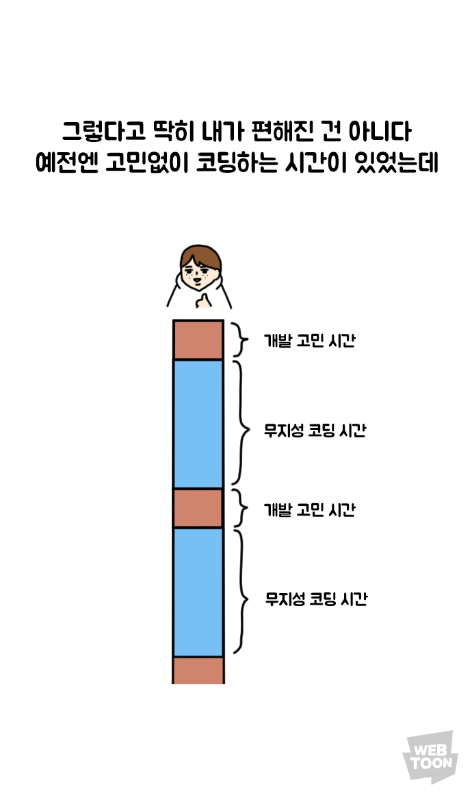
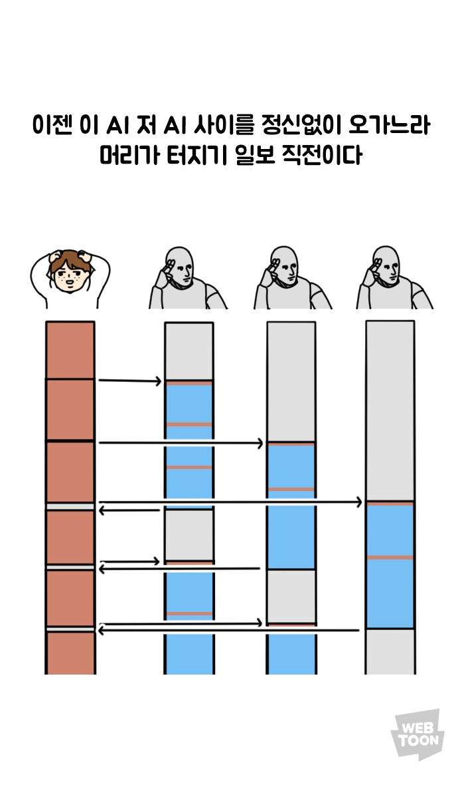
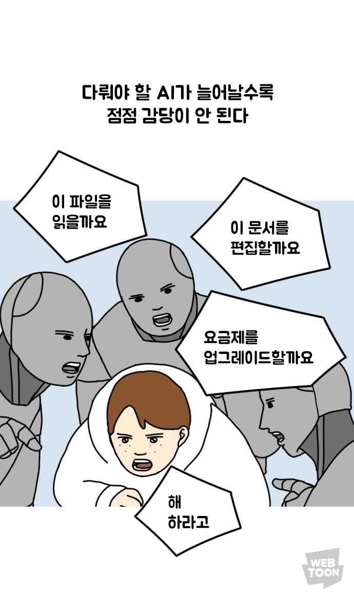
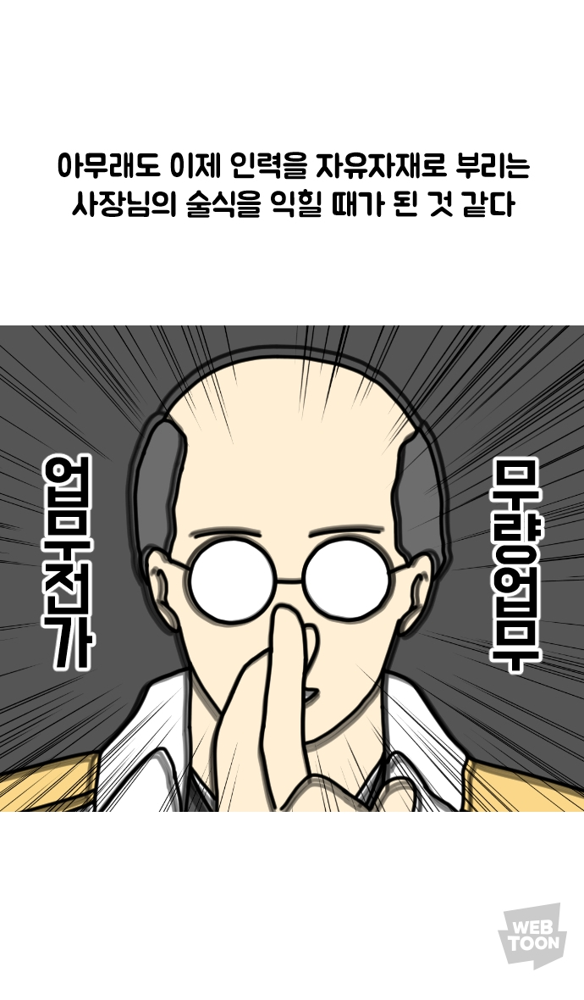
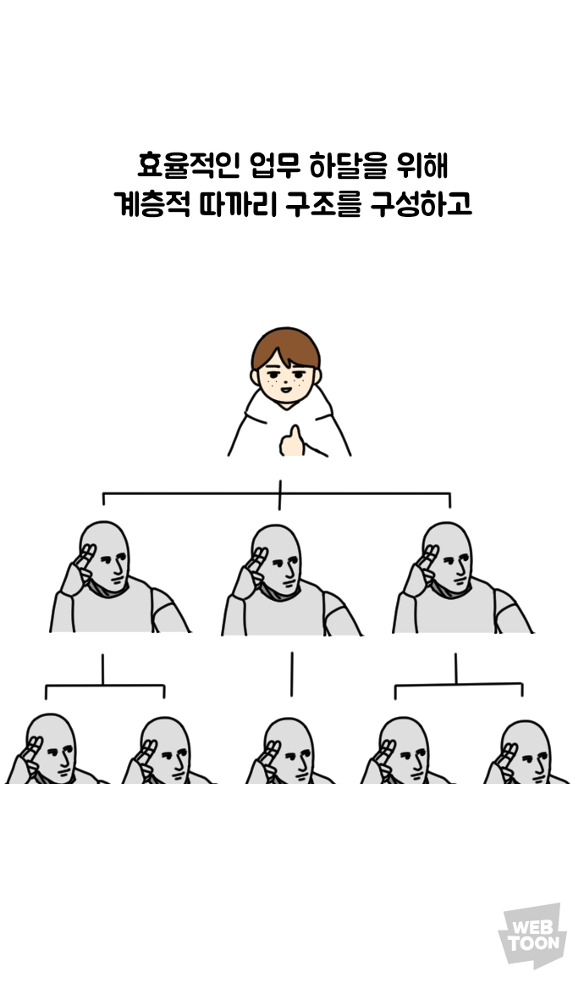
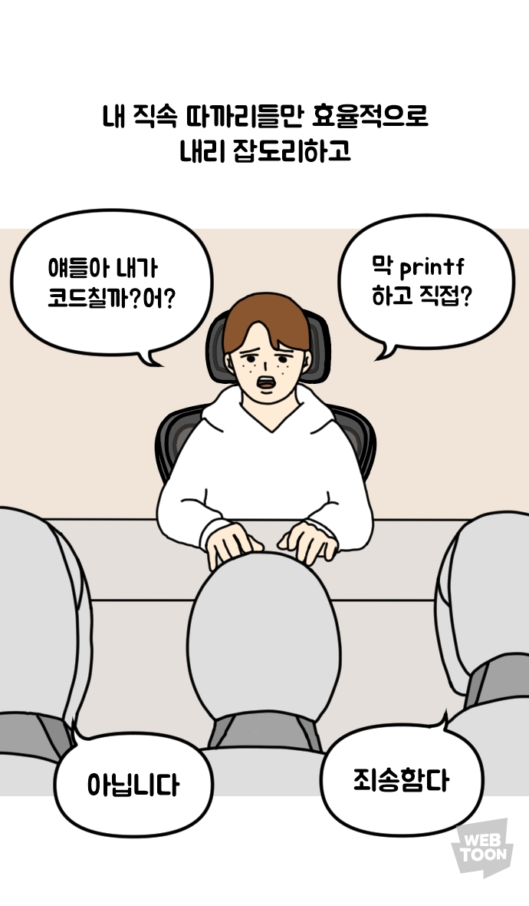
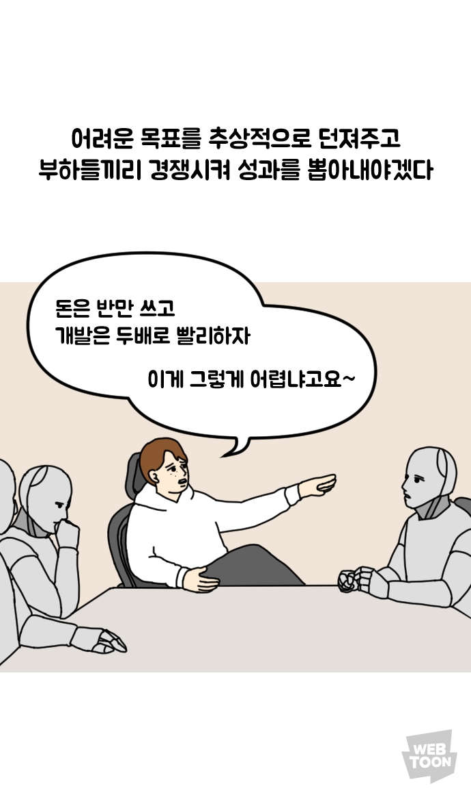

Learning by Sharing · 2026.06.04
AI를 잘 쓰는 것은
무엇일까?
창의 · 조직학습 · 사회연결
테크임팩트팀 · TECHFORIMPACT
kakao!mpact01 · 7 directions
01"AI를 잘 쓴다는 것은 무엇일까?" — 7가지 방향 중, 3가지에 주목
POP
QUIZ
· 01 ·
— intermission · question —
Q.
MIT 미디어랩 연구(Kosmyna et al., 2025)는 54명을 ① ChatGPT 사용 · ② 구글 검색만 사용 · ③ 도구 미사용 세 그룹으로 나눠 에세이를 쓰게 하고 EEG로 뇌 연결성을 측정했습니다. ChatGPT 그룹은 자기 글인데도 "내가 쓴 건가?"를 잘 기억 못 했고, 검색·도구 미사용 그룹의 뇌가 가장 활발했어요.
이러한 현상을 연구진은 무엇이라 명명했을까요?
POP
QUIZ
· 01 ·
— intermission · answer —
정답
인지 부채
Cognitive Debt
AI 보조 그룹은 검색, 도구 미사용 그룹 대비
실행 제어, 기억 부호화, 창의성 영역이 약화되었습니다.
지금은 편하지만 나중에 청구되는 빚이 뇌에 쌓인다는 것이었지요.
kakao!mpact02 · 오늘의 주제
02안목 → 동료 → 사회
Taste · Colleague · Society
축 04 · Taste
창의적으로
쓰는
개인의 안목으로
AI가 만드는 평균 위에 차이를 만들기
축 05 · Colleague
조직 학습으로
쓰는
동료의 학습으로
개인의 발견이 조직 자산으로
축 07 · Society
사회와
연결된
사회의 자산으로
"잘 쓰는" + "잘 쓰도록 돕는" 재단
kakao!mpact · Section 04 · 창의
01
창의적으로
쓰는
왜 AI가 만든 건 다 비슷한 느낌일까?
creative direction
AI는 평범함을
확장 가능하게 만든다.
"속도가 강점이 아니다.
판단력이 강점이다.
취향이 강점이다."
Fast Company Middle East (2026)
kakao!mpact04 창의 · 자신감의 역설
03자신감의 역설 — 비판적 사고는 언제 발생하는가?
WHO · Microsoft Research × Carnegie Mellon (CHI 2025 게재)
HOW · 지식 노동자 319명 / 936개 AI 사용 사례 + 자기 보고
Q · 사람들이 AI를 쓸 때, 비판적 사고는 어디로 가는가?
AI 신뢰가 높아지면, 비판적 사고는 줄어들고
자기 자신감이 높아지면, 비판적 사고는 높아진다
낮은 자기 자신감
높은 자기 자신감
높은 AI 신뢰
⚠ 위험 구간
[ 맹목적 의존 ]
AI에 대한 신뢰가 높아 비판적 사고 노력 급감.
β = −0.69, p < 0.001
★ 목표 구간
[ Active Stewardship ]
자신의 전문성을 바탕으로 AI 결과를 적극적으로 지시·적용·평가.
β = +0.26, p = 0.026
낮은 AI 신뢰
정체 구간
[ 회피 및 방관 ]
도구와 자신 모두를 불신하여 작업 지연.
⚠ 경계 구간
[ 수동적 검토 ]
AI를 불신하여 모든 것을 직접 재작업.
출처 · Lee, Sarkar et al., "The Impact of Generative AI on Critical Thinking", CHI 2025 · Microsoft Research × CMU · N=319, 936 사례
POP
QUIZ
· 02 ·
— intermission · question —
Q.
생성형 인공지능(AI)을 이용해 대량으로 양산되는 영양가 없고 질 낮은 디지털 콘텐츠를 뜻하는 이 말은 무엇일까요?
POP
QUIZ
· 02 ·
— intermission · answer —
정답
AI Slop
슬롭 · slop
원래 음식물 찌꺼기·돼지 사료를 의미하던 말.
AI가 인터넷 공간을 무의미한 정보 쓰레기장으로 만들고 있다는 비판적 의미.
2025 Merriam-Webster · The Economist 올해의 단어
kakao!mpact04 창의 · AI Slop의 안전망
04판단력과 취향(Taste), AI Slop의 유일한 안전망
AI는 평균을 재생산한다 — 차이를 만드는 책임은 인간의 판단에 남는다
학술 정전 · Science 2025.3
LLM은 문화적 기술
"LLM은 차이를 만들지 않고 합의를 재생산한다.
AI는 인쇄술·시장·관료제와 같은 문화적·사회적 기술이다."
Farrell · Gopnik · Shalizi · Evans
(Johns Hopkins · UC Berkeley · CMU · 시카고대)
전 Google Chief Decision Scientist
판단이 곧 병목
"모든 것이 생성될 수 있는 시대, 희소한 것은 판단이다.
병목은 데이터에서 결정으로 옮겨갔다.
AI는 자신이 원하는 걸 아는 사람에게만 강력한 도구다."
Cassie Kozyrkov
Decision Intelligence Substack (2025)
산업 평론 · Fast Company 2026.3
취향이 강점
"속도가 강점이 아니다.
판단력이 강점이다.
취향이 강점이다.
AI는 평범함을 확장 가능하게 만들었다."
Fast Company Middle East
"In the age of AI slop, judgment is the superpower"
kakao!mpact04 창의 · Active Stewardship
05Active Stewardship — 판단과 취향을 발휘하는 길
같은 도구, 다른 결과 — 창의는 자기 폼·자기 톤을 지키는 일
01 · Information Verification
정보 수집에서
정보 검증으로
즉시 확보된 대규모 정보에 대해 사실관계 확인 · 편향성 식별 · 교차 검증을 위한 인지적 노력이 필요해진다.
02 · Response Integration
문제 해결에서
응답 통합으로
AI가 제안한 솔루션을 자신의 톤앤매너, 작업 맥락에 맞게 재단(Tailoring)하는 데 더 많은 노력이 투입된다.
03 · Task Stewardship
작업 실행에서
작업 관리로
의도를 명확한 쿼리로 변환하고, AI가 궤도를 벗어나지 않도록 조향(Steering)하며 감독관 책임을 진다.
출처 · Lee et al., CHI 2025 · Microsoft Research × CMU
kakao!mpact04 창의 · Stewardship의 길 (1/2)
05Active Stewardship — 판단과 취향을 발휘하는 길



출처 · 네이버웹툰 [경경수의 개발만화]
kakao!mpact04 창의 · Stewardship의 길 (2/2)
05Active Stewardship — 판단과 취향을 발휘하는 길




출처 · 네이버웹툰 [경경수의 개발만화]
kakao!mpact · Section 05 · 동료
02
조직 학습
으로 쓰는
모두가 AI를 쓰는데,
우리 조직은 무엇을 배웠지?
카카오임팩트 4월 측정
89%
매일 AI를 쓰는 크루
85분
1인당 하루 평균 절약
이 숫자들이 조직의 역량으로 옮겨갔는가?
출처 · 카카오임팩트 AX 활용 측정 (N=18, 2026.4)
kakao!mpact05 조직 · 옛 측정 vs 새 질문
06무엇을 측정하느냐가 무엇을 하느냐를 결정한다
OLD · 옛 측정
Token-to-output
"누가 더 많이 썼는가" ·
"얼마나 시간을 절약했는가"
- 측정하는 순간 사용량 게임화
- 개인 도구 사용에 갇혀 있다
- 1년 뒤에도 같은 발견 반복
NEW ★ · 새로운 질문
Token-to-learning
"누가 발견을 옆자리로 옮겼는가" ·
"누구의 학습이 되었는가"
- 학습을 측정하면 학습이 일어난다
- 발견이 팀 자산으로 옮겨간다
- "왜·어떻게"가 제도적 지식으로 누적
출처 (1) · Robert Glaser, "Token-to-learning", robert-glaser.de (2026.5)
출처 (2) · Ethan Mollick, "One Useful Thing" (2025.5) · Behavioral Sciences 15(12):1635 (2025)
kakao!mpact · Section 07 · 사회
03
사회와
연결된
사회로 "잘 쓰는" 주체가 넘어갈 때
어떻게 함께 잘 쓸 것인가?
비영리 AI 활용 동향
80%
비영리의 AI 조직 정책 부재
"비영리가 AI 결정에 참여하지 않으면, 그들이 옹호하는 가치가 대화에서 빠진다."
— Bridgespan + Stanford HAI (2026)
kakao!mpact07 사회 · 두 가설
07정 반대의 가설
두 진단은 정반대 — 그러나 둘 모두 맞다
우리의 가설 ↓
AI가 격차를 줄인다
"AI 도구는 습득 장벽이 낮고 할 수 있는 일의 가능성이 커, 기술 격차 해소에 이전보다 더 유리해졌다."
카카오임팩트 사무국 · 변화 이론 가설 ②
Mark (김주호 교수님) 진단 ↑
AI가 격차를 키운다
"AI는 개인의 역량을 증폭시키는 특성이 있어, 잘 활용하는 사람과 그렇지 못한 사람 간 격차가 더 커질 수 있다."
김주호 KAIST 교수
AI 안전 국민공감 토크 콘서트 (2026.4.2)
AND
→ 둘 모두 맞는 진단. 그래서 카카오임팩트가 "잘 쓰도록 돕는" 자리가 필요하다.
kakao!mpact07 사회 · 두 정체성
082026 카카오임팩트 목표
잘 쓰는
=
잘 쓰도록 돕는
학술·산업 정책
"비영리가 AI 결정에 참여하지 않으면,
그들이 옹호하는 가치가 대화에서 빠진다."
Bridgespan + Stanford HAI (2026)
비영리 80%가 AI 조직 정책 부재
국내 · 재단 칼럼
"AI는 중립적인 도구가 아니다.
누가 어떤 목적 아래 쓰느냐에 따라 기술은 불평등을 심화시킨다."
김진아 아름다운재단 사무총장
더나은미래 (2025.8)
kakao!mpactDialogue · 수다 키워드
09테크임팩트팀의 수다 키워드
01취향(taste)·판단력이 속도를 대신하는 시대
02AI 슬롭 경계와 카임다운 오리지널리티
03경청과 메모가 AI 사용의 전제
04회고 루틴 + 가이드 만들기가 비판적 사용을 강제
05하네스 워킹 = 에이전트 + 스킬 + State 문서 + 정리된 폴더 (폴더 정리가 핵심 기술)
06임계점에 다다른 모델 발전 — 지금이 기준을 주입할 때
07테크포임팩트가 우리의 본업
kakao!mpactDialogue · Your turn
10함께 이야기 해보기
Q3
Token-to-learning으로 가려면 어떻게 하면 될까?
Q4
사업에서 AI를 잘 쓰고, 잘 쓰도록 도우려면?
kakao!mpactMore · 드루와
11더 궁금하신 크루들은 드루와~
원문 자료 공유
사전 읽을거리 & 출처
Google Doc · 자세한 자료 묶음
테크임팩트 팀 수다
대담 풀버전·NotebookLM
수다 전문 · 키워드 맥락